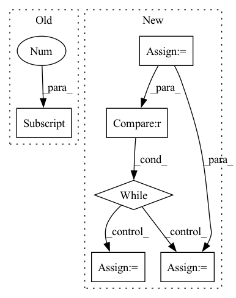

Pattern ID :14791

Before Change
layers.append(MiniBatchStd())
layers += [
EqualizedConv2d(resl2ch[4]+1, resl2ch[4], 3, padding=1, bias=False),
FusedLeakyReLU(resl2ch[4]),
Flatten(),
EqualizedLinear(resl2ch[4]*4**2, resl2ch[4]),
After Change
Conv2d("elr", image_channels, ochannels, 1),
nn.LeakyReLU(0.2, inplace=True)
)
resl = image_size
blocks = []
while resl > 4:
resl = resl // 2
channels *= 2
ichannels, ochannels = ochannels, check_c(channels)
blocks.append(
DBlock(ichannels, ochannels, block_num_conv)
In pattern: SUPERPATTERN
Frequency: 4
Non-data size: 6
Instances
Fragment ID: 48656295
Project Name: stomoya/animeface
Commit Name: b3652bae109c713da926d5532eb014b02135da52
Time: 2020-12-14
Author: blackie0110@gmail.com
File Name: implementations/StyleGAN2/model.py
M Class Name: Discriminator
N Class Name: Discriminator
M Method Name: __init__(7)
N Method Name: __init__(1)
M Parent Class: nn.Module
N Parent Class: nn.Module
M File Name: implementations/StyleGAN2/model.py
N File Name: implementations/StyleGAN2/model.py
M Start Line: 354
M End Line: 387
N Start Line: 364
N End Line: 389
'>
Before Change
tot_env_steps += 1
// save
value = self.agent.estimate_value(obs)[0]
self.buffer.add_transition(obs, action, reward, value, log_prob)
obs = next_obs
timeout = traj_length == self.max_trajectory_length
After Change
self.buffer.clear()
sample_start_time = time()
env_steps = 0
num_sampled_trajs = 0
while env_steps < self.num_env_steps_per_epoch:
obs, info = self.train_env.reset()
traj_return = 0
for traj_step in range(self.max_trajectory_length):
// get action
action = itemgetter("action")(self.agent.select_action(obs, deterministic=False))
next_obs, reward, done, truncated, _ = self.train_env.step(action)
traj_return += reward
tot_env_steps += 1
env_steps += 1
truncated = traj_step == self.max_trajectory_length - 1 or truncated
// save
self.buffer.add_transition(obs, action, next_obs, reward, done, truncated)
obs = next_obs
if truncated or done:
train_traj_returns.append(traj_return)
train_traj_lengths.append(traj_step + 1)
// reset env and pointer
break
self.post_step(tot_env_steps)
num_sampled_trajs += 1
sample_used_time = time() - sample_start_time
log_infos["times/sample"] = sample_used_time
log_infos["performance/train_return"] = np.mean(train_traj_returns[-num_sampled_trajs:])
'>
Fragment ID: 48656167
Project Name: x35f/unstable_baselines
Commit Name: 4f0036392d4f35e65516efa47407b0cfbe05eb81
Time: 2023-01-16
Author: 1621322691@qq.com
File Name: unstable_baselines/baselines/ppo/trainer.py
M Class Name: PPOTrainer
N Class Name: PPOTrainer
M Method Name: train(1)
N Method Name: train(1)
M Parent Class: BaseTrainer
N Parent Class: BaseTrainer
M File Name: unstable_baselines/baselines/ppo/trainer.py
N File Name: unstable_baselines/baselines/ppo/trainer.py
M Start Line: 26
M End Line: 72
N Start Line: 27
N End Line: 80
'>
Before Change
def get_geodesic_distance(self) -> float:
curr = self.get_location()
goal = self.get_current_episode().goals[0].position
return self.env.sim.geodesic_distance(curr, goal)
def get_distance_to_target(self) -> float:
After Change
curr = self.get_location()
goals = self.get_current_episode().goals
goal = goals[self.goal_index].position
distance = self.env.sim.geodesic_distance(curr, goal)
while distance in [float("-inf"), float("inf")] or np.isnan(distance):
self.goal_index = (self.goal_index + 1) % len(goals)
goal = goals[self.goal_index].position
distance = self.env.sim.geodesic_distance(curr, goal)
return distance
'>
Fragment ID: 48656261
Project Name: allenai/allenact
Commit Name: 1f0e1bba9171e24983f30a71f7eb018ab2bf4507
Time: 2020-03-26
Author: klemenk@allenai.org
File Name: rl_habitat/habitat_environment.py
M Class Name: HabitatEnvironment
N Class Name: HabitatEnvironment
M Method Name: get_geodesic_distance(1)
N Method Name: get_geodesic_distance(1)
M Parent Class: object
N Parent Class: object
M File Name: rl_habitat/habitat_environment.py
N File Name: rl_habitat/habitat_environment.py
M Start Line: 43
M End Line: 45
N Start Line: 44
N End Line: 54
'>
Before Change
batch_data = []
for i in range(batch_size):
mcfile = self.src_mc_files[i]
filename = basename(mcfile).split("-")[-1]
wavfile_path = join(self.src_wav_dir, filename.replace("npy", "wav"))
batch_data.append(wavfile_path)
After Change
def get_batch_test_data(self, batch_size=4):
batch_data = []
i = 0
while i != batch_size:
wav_file = self.src_wav_files[i]
filename = basename(wav_file)
num = filename.split(".")[0].split("_")[1]
for j in range(len(self.trg_wav_files)):
trg_wav_file = self.trg_wav_files[j]
trg_filename = basename(trg_wav_file)
trg_num = trg_filename.split(".")[0].split("_")[1]
'>
Fragment ID: 48656225
Project Name: samuelbroughton/stargan-voice-conversion-2
Commit Name: 26484a2db5a00247535c7ec7c1f97c10e711e022
Time: 2020-09-01
Author: broughtonjsam@gmail.com
File Name: convert.py
M Class Name: ConvertDataset
N Class Name: ConvertDataset
M Method Name: get_batch_test_data(2)
N Method Name: get_batch_test_data(2)
M Parent Class: object
N Parent Class: object
M File Name: convert.py
N File Name: convert.py
M Start Line: 47
M End Line: 54
N Start Line: 51
N End Line: 71